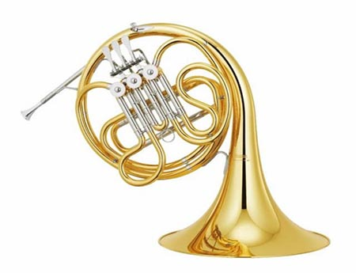

- Description
The YHR-314II F horn is a single horn that features exellent flexibility (Being able to change its pitch by using the hand in the bell technique), and accurate intonation balanced through the entire range of the F key. It comes with a Eb extension tuning slide, allowing players to play peices in the Eb key without having to transcribe the piece. Viable for both performers who need it for an orchestral performance due to it being built for performance or just aspiring students who want to learn the basics of playing the french horn, as the french horn is more lightweight and less complicated than the double horn counterpart of the instrument.
- Specifications
Name: Yamaha YHR-314II Key: F / Eb Finishing: Mostly Laquer, with silver plated valve areas Bell Size: 12 in Bore Size: 0.472 in Mouthpiece: HR-32C4 Pricing: RM350 per month - Pricing Explanation
The Horn (Either single or double) is one of the most expensive instruments due to the complexity of the design and the need for additional materials, not to mention the extra tuning slide, standing at the price of USD2250, which when converted to MYR is around RM10000. Hence the pricing of even a student model is set at a bargain of RM350 a month, far from what is needed to buy a barand new French Horn.
- Disclaimer
When in possession of the instrument, the user holds full responsibility for what happens to the instrument. If the instrument rented is in anyway damaged, the customer will have to replace said instrument for the rental service. Late returners of the instrument would be issued a warning in a week, and will be subjegated to a RM150 late fee. For every subsequent week, another RM150 would be added.